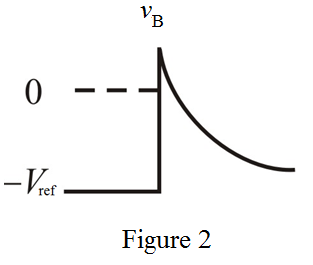

At time, , the voltage is,
Therefore, the output pulse width  is .
is .
Refer to Figure P17.34 in the text book for the monostable multivibrator circuit.
Draw the trigger pulse.
Draw the voltage, waveform at the inverting terminal.

The non-inverting terminal is fed back from the output.
Draw the voltage, waveform at the non- inverting terminal.
The output of the circuit is positive saturation level when and negative saturation level when .
Draw the output voltage waveform.
At time, , the voltage is,
Therefore, the output pulse width is .